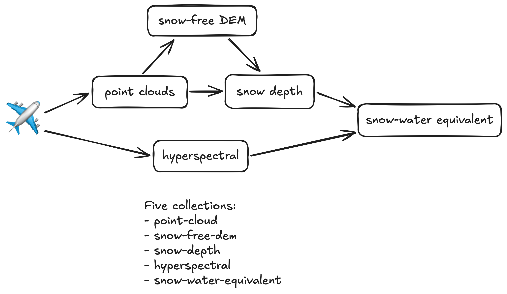
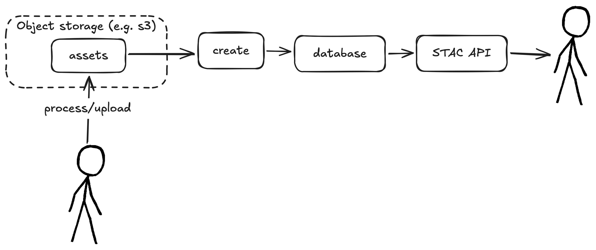
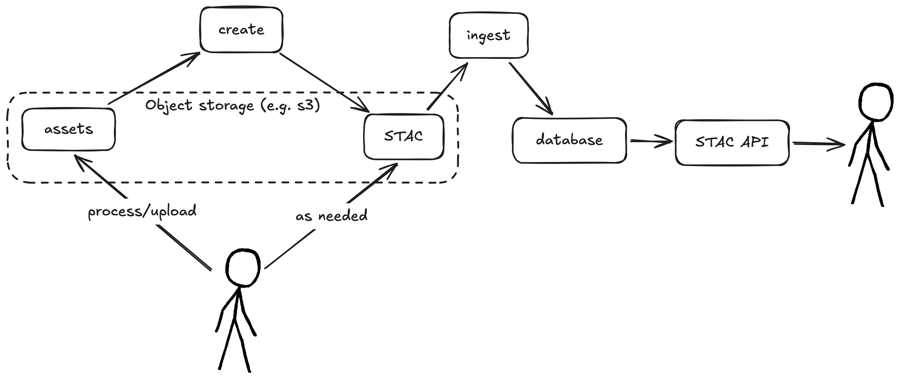
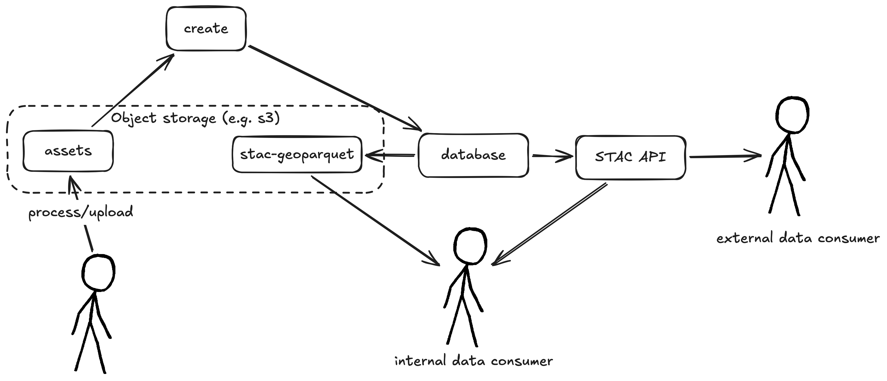
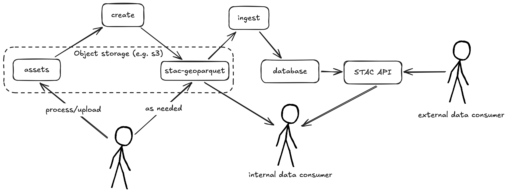
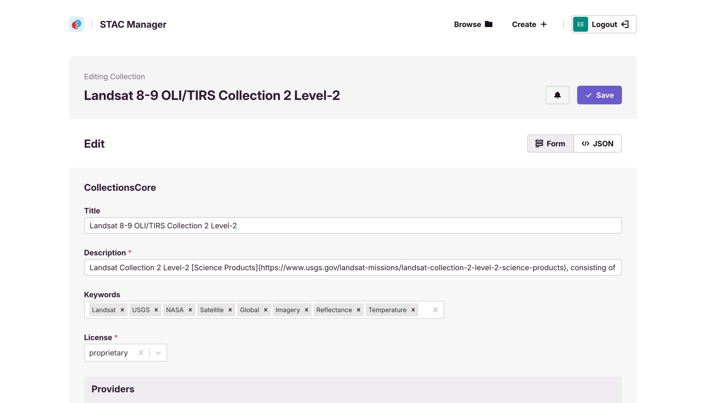
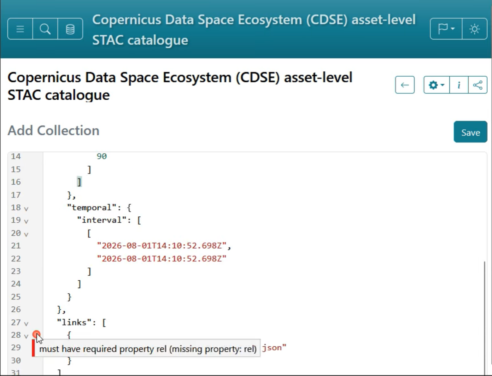

Using STAC internally
Pete Gadomski, Development Seed
Image credit Slyronit, CC BY-SA 4.0, via Wikimedia Commons
{kind=link}
Examples from client work as well as R&D projects
STAC in, STAC out — Matt Hanson
Airborne Snow Observatories

Provenance?
A full provenance model is far beyond the scope of STAC, and the goal is to align with any good independent spec that comes along for that. But the derived_from field is seen as a way to encourage fuller specs and at least start a linking structure that can be used as a jumping off point for more experiments in provenance tracking.
processing extension
| Field Name | Type | Description |
|---|---|---|
| processing:expression | Expression Object | An expression or processing chain that describes how the data has been processed. Alternatively, you can also link to a processing chain with the relation type processing-expression (see below). |
| processing:lineage | string | Lineage Information provided as free text information about the how observations were processed or models that were used to create the resource being described NASA ISO. For example, GRD Post Processing for "GRD" product of Sentinel-1 satellites. CommonMark 0.29 syntax MAY be used for rich text representation. |
| processing:level | string | The name commonly used to refer to the processing level to make it easier to search for product level across collections or items. The short name must be used (only L, not Level). See the list of suggested processing levels. |
| processing:facility | string | The name of the facility that produced the data. For example, Copernicus S1 Core Ground Segment - DPA for product of Sentinel-1 satellites. |
| processing:datetime | string | Processing date and time of the corresponding data formatted according to RFC 3339, section 5.6, in UTC. |
| processing:version | string | The version of the primary processing software or processing chain that produced the data. For example, this could be the processing baseline for the Sentinel missions. |
| processing:software | Map<string, string> | A dictionary with name/version for key/value describing one or more applications or libraries that were involved during the production of the data for provenance purposes. |
Authorization

stac-auth-proxy

Route-level authorization

# Set default policy to public
DEFAULT_PUBLIC=true
# Require specific scopes for write operations
PRIVATE_ENDPOINTS='{
"^/collections$": [["POST", "collection:create"]],
"^/collections/([^/]+)$": [["PUT", "collection:update"], ["PATCH", "collection:update"], ["DELETE", "collection:delete"]],
"^/collections/([^/]+)/items$": [["POST", "item:create"]],
"^/collections/([^/]+)/items/([^/]+)$": [["PUT", "item:update"], ["PATCH", "item:update"], ["DELETE", "item:delete"]],
"^/collections/([^/]+)/bulk_items$": [["POST", "item:create"]]
}'
Record-level authorization

# Basic configuration
ITEMS_FILTER_CLS=stac_auth_proxy.filters:Template
ITEMS_FILTER_ARGS=["collection IN ('public')"]
# With keyword arguments
ITEMS_FILTER_CLS=stac_auth_proxy.filters:Opa
ITEMS_FILTER_ARGS=["http://opa:8181", "stac/items/allow"]
ITEMS_FILTER_KWARGS={"cache_ttl": 30.0}
Resilience
- Internal processes evolve and change
- Databases are (usually) multi-use
- Access patterns are different for internal and external users
Simple ingest

Store STAC in object storage

Read-only snapshots

Make object storage usable (POC)

stac-manager (under development)

stac-browser (release candidate)

Fin
Thanks for your time!
slides | @gadomski on Github | gadom.ski on Bluesky
Image Wilfredor, CC0, via Wikimedia Commons
{kind=link}